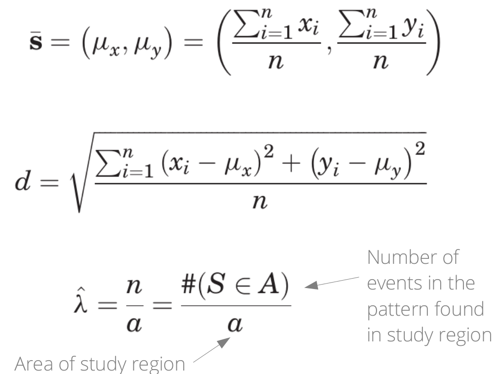
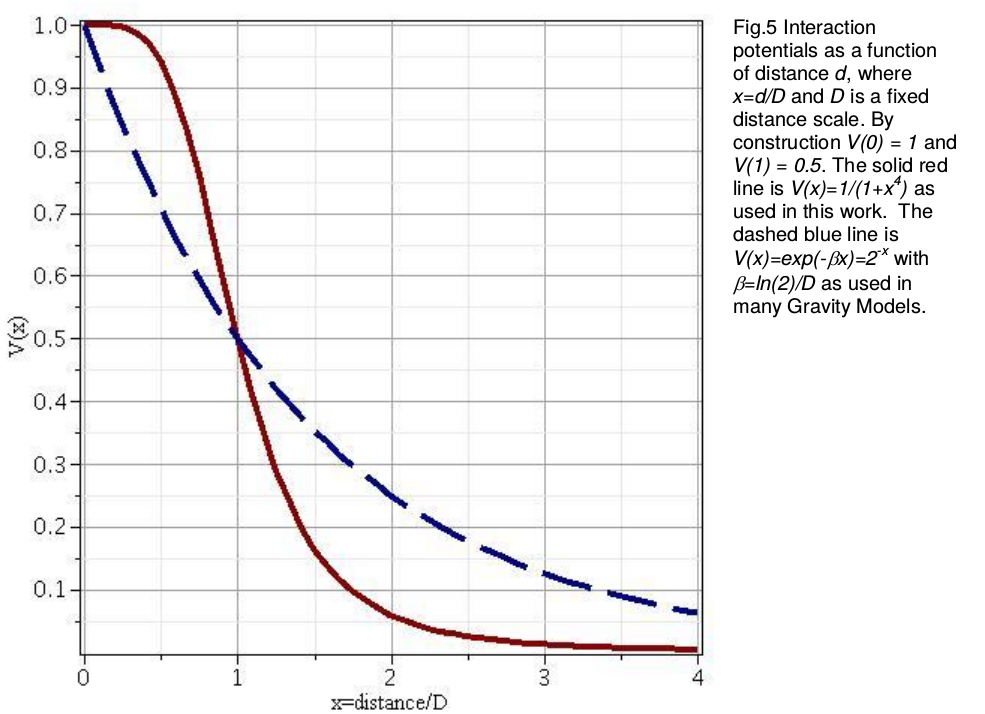
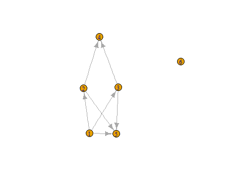
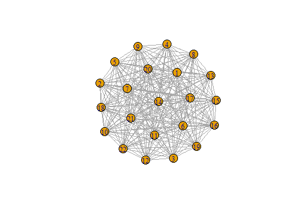
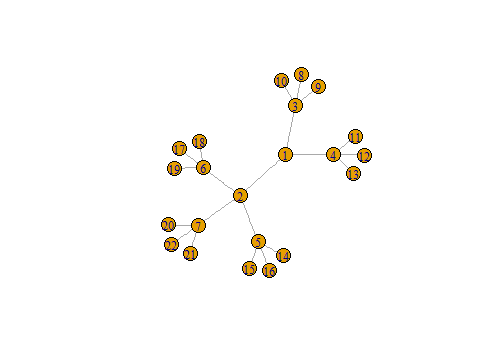
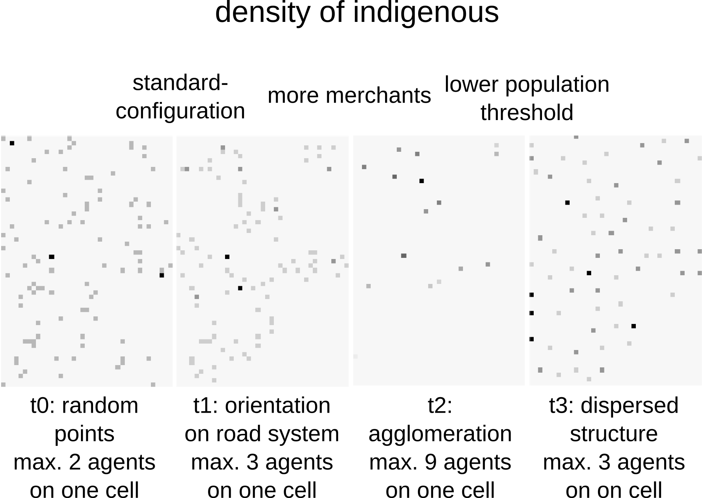
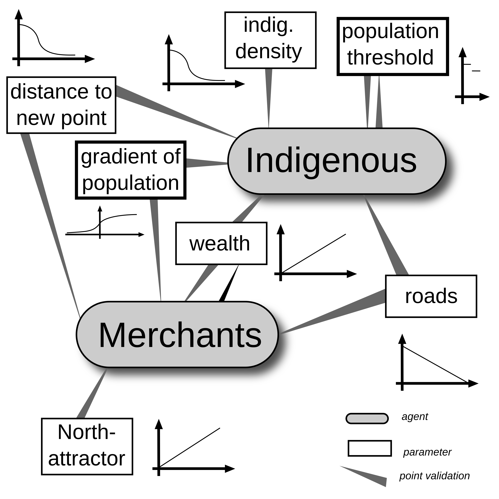

Point Patterns and Network Approaches
Modelling Spheres of Interaction
Oliver Nakoinz, Daniel Knitter
MOSAIC Summer School 2016
Modelling Spheres of Interaction
Interacting partners
- individual interactions
- interaction in groups
- interaction between groups
Modelling Spheres of Interaction
Interacting systems
- Point Patterns
- Networks
- Systems

Point Patterns

Point pattern analyses
An approach and a set of methods that helps you to be explicit about the processes that caused the spatial distribution of your points (e.g. ceramic finds, settlements, graveyards, ...) [from pattern to process]
- http://spatstat.github.io/
- https://cran.r-project.org/web/packages/spatstat/index.html
- Getting Started with Spatstat
- Spatstat manual (1639 pages)
- THE book - - - - >

Point pattern analyses
It uses the simplest possible form of spatial data: points/events in an area/region/space

Point pattern analyses
Random point pattern
independent from space ...
- noise
- individuality
- non-spatial process
Structured point patterns
are influenced by:
- space (first-order effects/properties)
- points (second-order effects/properties)
- structures (third-order effects/properties)
Point pattern analyses

Point pattern analyses

Point pattern analyses
Simple measures: mean, standard deviation, intensity (~ density)

O'Sullivan & Unwin 2010, 126-126
Point pattern analyses
download.file(
url = "https://raw.githubusercontent.com/dakni/mhbil/master/data/meg_dw.csv",
destfile = "2data/meg_dw.csv")
meg_dw <- read.table(file = "2data/meg_dw.csv",
header = TRUE,
sep = ";")
Point pattern analyses
library(spatstat)
meg_pp <- ppp(x = meg_dw$x, y = meg_dw$y,
window = owin(xrange = c(min(meg_dw$x),
max(meg_dw$x)
),
yrange = c(min(meg_dw$y),
max(meg_dw$y)
),
unitname = c("meter", "meters")
)
)
Point pattern analyses
plot(meg_pp)

Networks
Networks
Definition
A networks are objects, in which elements (vertices) are connected by edges.
Networks are models, mapping certain facets of the real world.
Network theory has roots in geography and in social sciences
Networks
Network theory is based on graph theory

Do you know examples of networks?
Networks
- Rivers, Knappett, Evans
- Cyclades in Bronze Age
- fixed radius network

Networks
- Rivers, Knappett, Evans
- distance decay function

Networks
- Rivers, Knappett, Evans
- Cyclades in Bronze Age
- entropy model using double constrains

Networks | Graphs
- package igraph
- constructing graphs
## Error in plot(n1): object 'n1' not found
library("igraph")
n1 <- graph( edges=c(1,5, 2,4, 1,3, 2,5,
3,5, 1,2, 3,4), n=6, directed=T )
plot(n1)
n1
## IGRAPH D--- 6 7 --
## + edges:
## [1] 1->5 2->4 1->3 2->5 3->5 1->2 3->4
E(n1)
## + 7/7 edges:
## [1] 1->5 2->4 1->3 2->5 3->5 1->2 3->4
V(n1)
## + 6/6 vertices:
## [1] 1 2 3 4 5 6
Networks | Graphs
- package igraph
- constructing graphs

get.adjacency(n1)
## 6 x 6 sparse Matrix of class "dgCMatrix"
##
## [1,] . 1 1 . 1 .
## [2,] . . . 1 1 .
## [3,] . . . 1 1 .
## [4,] . . . . . .
## [5,] . . . . . .
## [6,] . . . . . .
Networks | Graphs

n1 <- set_vertex_attr(n1, "label",
value =c("p1", "p2", "p3",
"Ppoint4", "Punkt 5", "6"))
plot(n1)
Networks | Graphs

n2 <- make_full_graph(22)
plot(n2)
Networks | Graphs

n3 <- make_tree(22, children = 3,
mode = "undirected")
plot(n3)
Networks
Delaunay graph
- Delaunay graph as example for graphs/spatial networks
- The Delaunay graph connects the natural neighbours

Networks | Delaunay graph
Construction rules for some neighbourhood graphs

Networks | Delaunay graph
The connections represent the liklyness of interaction

Networks
- packages
spdep - spatial graphs
library("spdep")
wd <- "/home/fon/daten/analyse/mosaic"
setwd(wd)
set.seed(1242)
co.weapons <- read.csv("2data/
shkr-weapons.csv", header=TRUE,
sep=";")[sample(1:220,10),1:2]
Networks | Delaunay graph
##
## PLEASE NOTE: The components "delsgs" and "summary" of the
## object returned by deldir() are now DATA FRAMES rather than
## matrices (as they were prior to release 0.0-18).
## See help("deldir").
##
## PLEASE NOTE: The process that deldir() uses for determining
## duplicated points has changed from that used in version
## 0.0-9 of this package (and previously). See help("deldir").
## Error in CRS(as.character(crs1)): object 'crs1' not found
## Error in plot(del): object 'del' not found
coords <- as.matrix(coordinates
(co.weapons))
ids <- row.names(as.data.frame
(co.weapons))
wts <- co.weapons[,1]; wts[] <- 1
fs_nb_del <- tri2nb(co.weapons,
row.names=ids)
del <- nb2lines(fs_nb_del,
wts=wts, coords=coords,
proj4string = CRS(as.character(crs1)))
plot(del)
Networks | SOI
## Error in CRS(as.character(crs1)): object 'crs1' not found
## Error in plot(soi): object 'soi' not found
library(RANN)
fs_nb_soi <- graph2nb(soi.graph(fs_nb_del,
coords), row.names=ids)
soi <- nb2lines(fs_nb_soi, wts=wts,
coords=coords, proj4string =
CRS(as.character(crs1)))
plot(soi)
Networks | Gabriel-Graph
## Error in CRS(as.character(crs1)): object 'crs1' not found
## Error in plot(gabriel): object 'gabriel' not found
fs_nb_gabriel <- graph2nb(gabrielneigh
(coords), row.names=ids)
gabriel <- nb2lines(fs_nb_gabriel,
wts=wts, coords=coords,
proj4string = CRS(as.character(crs1)))
plot(gabriel)
Networks | Relative-Neighbour-Graph
## Error in CRS(as.character(crs1)): object 'crs1' not found
## Error in plot(relative): object 'relative' not found
fs_nb_relative <- graph2nb(
relativeneigh(coords),
row.names=ids)
relative <- nb2lines(fs_nb_relative,
wts=wts, coords=coords,
proj4string = CRS(as.character(crs1)))
plot(relative)
Networks | Delaunay graph
- transforming
spdep-graphtoigraph-graph

n4nb <- nb2mat(fs_nb_del,
style="B", zero.policy=TRUE)
n4 <- graph.adjacency(n4nb,
mode="undirected")
plot(n4)
What do spatial graphs tell about interaction?
Networks | Centrality
Centrality maps the structural importance of a node/edge in a network.

Networks | Centrality
degree(n4)
## [1] 5 3 6 5 5 3 6 3 5 3
closeness(n4)
## [1] 0.07142857 0.06666667 0.08333333 0.07692308 0.07692308 0.05882353
## [7] 0.08333333 0.06250000 0.07692308 0.06666667
betweenness(n4)
## [1] 3.0000000 0.6666667 5.1666667 2.5000000 3.9166667 0.0000000 5.1666667
## [8] 0.0000000 3.9166667 0.6666667
edge_betweenness(n4)
## [1] 3.666667 2.833333 2.833333 2.000000 3.666667 4.166667 2.500000
## [8] 3.750000 2.666667 3.500000 4.083333 2.500000 1.833333 2.833333
## [15] 3.750000 1.833333 3.083333 4.083333 3.666667 3.083333 3.500000
## [22] 4.166667
Networks | Plotting Centrality
- transforming
spdep-graphtoigraph-graph

ceb <- cluster_edge_
betweenness(n4)
dendPlot(ceb, mode="hclust")
Networks | Plotting Centrality
- transforming
spdep-graphtoigraph-graph

plot(ceb, n4)
What does centrality tell about interaction?
Systems
Systems | Agent Based Modelling
ABM comprises
- an actors
- an envirionment and
- a process

Systems | Agent Based Modelling
Example Heuneburg
- indigenous people
- merchants

Systems | Agent Based Modelling
Reasoning for certain relationships

Systems | Agent Based Modelling
The process
Actors can:
- move
- trade
- accumulate wealth

Systems | Agent Based Modelling
Some results

Systems | Agent Based Modelling
But is it useful?
What do you think?

Systems | Agent Based Modelling
Introducing some complexity

Systems | Agent Based Modelling
Some more results

Systems | Agent Based Modelling
Interpretation for the Heuneburg
No code provided for the AMB (Summer School 2017)
Apply point pattern analysis and network analysis in the workshop this afternoon!